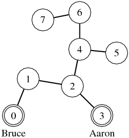
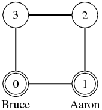

Time Limit: 5 sec
Aaron は凶悪な犯罪者である． 彼は幾度も犯罪を繰り返しながら （万引き2回，のぞき16回，下着泥棒256回，食い逃げ65,536回） も，その人並み外れた身体能力を用いて 警察の手から逃れ続けてきた． Bruce は警察官である． 彼は突出した運動能力は持っていないが， 写真撮影が趣味であり， 彼の撮った写真が雑誌に載るほどの腕前を持っている．
ある日，Bruce は山奥に写真撮影をしに来た． すると偶然 Aaron のアジトを突き止めてしまった． Bruce が逃げる Aaron を追っていくと， 彼らは落とし穴に落ちて古代遺跡の中に迷い込んでしまった．
古代遺跡の中はいくつかの部屋と，部屋どうしを結ぶ通路で構成されている． 古代遺跡に M 個の部屋があるとき， 遺跡内の部屋にはそれぞれ 0 から M−1 までの番号がつけられている．
Aaron は逃げている間に時効を迎えるかもしれないと考えたので， Bruce が最適に移動したときに一番長い間逃げ続けられるように 遺跡の中を移動する． Bruce は早く Aaron を写真に収めたいので， Aaron が最適に移動したときに一番早く Bruce を写真に収められるように 遺跡の中を移動する．
Aaron と Bruce は順番に行動する． 最初は Aaron の番とする． それぞれの順番のとき，隣接している部屋のどれか1つに移動， もしくはその場にとどまることができる． Aaron と Bruce が同じ部屋に入ったとき， Bruce は Aaron を撮影するものとする．
Bruce が Aaron を撮影するのにどれくらいの時間がかかるかを求めて欲しい． 時間はターン数で表すこととし， Aaron と Bruce がともに1回行動し終わったら1ターンと数える．
例えば，図5のような状況のとき， Aaron は部屋5に逃げ込めば Bruce は4ターンでたどり着くが， Aaron が部屋7に逃げ込めば Bruce はたどり着くのに5ターンかかる． Aaron にとっては部屋7に逃げ込むことで一番長く逃げ続けられるので 答えは5ターンとなる．
|  |
| 図5: Aaron が5ターン逃げ続けられる例． |
また，図6のような状況のとき， Aaron が Bruce から遠ざかるように部屋を移動することで いつまでも逃げ回ることができる．
|  |
| 図6: Aaron がいつまでも逃げ続けられる例． |
入力の最初の行にデータセット数を表す数 N (0 < N ≤ 100) が与えられる． 次の行から N 個のデータセットが続く．
各データセットは古代遺跡の形状と Aaron と Bruce の初期位置からなる． 初めに，古代遺跡の部屋の数 M (2 ≤ M ≤ 50) が与えられる． 次に要素数 M × M の行列が与えられる． 各行列の要素は 0 もしくは 1 であり， i 行目の j 番目の数字が 1 ならば， 部屋 i と部屋 j は通路でつながっているということを意味する （ただし，行列の行番号と列番号は0から数える）． 行列の (i, j) 成分と (j, i) 成分の値は必ず等しく， (i, i) 成分の値は 0 である． 続いて，2つの整数 a, b が与えられる． 各整数はそれぞれ Aaron の初期位置の部屋番号 (0 ≤ a < M) と Bruce の初期位置の部屋番号 (0 ≤ b < M) を示す． a と b の値は必ず異なる．
各データセットごとに，Bruce が Aaron を撮影するのに何ターンかかるかを
1行で出力せよ．
どれだけたっても撮影できない場合は
“infinity” と出力せよ．
6 8 0 1 0 0 0 0 0 0 1 0 1 0 0 0 0 0 0 1 0 1 1 0 0 0 0 0 1 0 0 0 0 0 0 0 1 0 0 1 1 0 0 0 0 0 1 0 0 0 0 0 0 0 1 0 0 1 0 0 0 0 0 0 1 0 3 0 4 0 1 1 0 1 0 0 1 1 0 0 1 0 1 1 0 1 0 5 0 1 0 1 0 1 0 0 1 0 0 0 0 0 1 1 1 0 0 0 0 0 1 0 0 2 0 5 0 1 0 0 1 1 0 1 1 1 0 1 0 1 0 0 1 1 0 1 1 1 0 1 0 2 4 5 0 1 0 1 0 1 0 1 1 0 0 1 0 0 1 1 1 0 0 1 0 0 1 1 0 3 0 5 0 1 0 1 1 1 0 1 0 1 0 1 0 1 0 1 0 1 0 1 1 1 0 1 0 0 4
5 infinity infinity 2 infinity 1